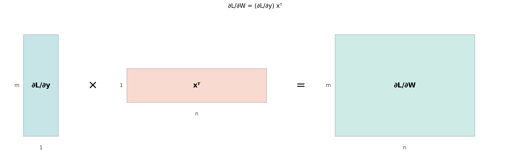
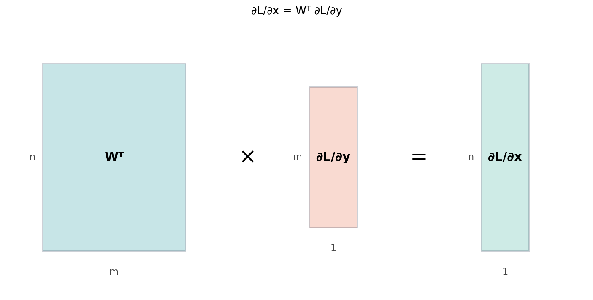

17.4 Mátrixkalkulus a gyakorlatban:
a leggyakoribb szabályok
17.4.1 Motiváció
Amikor egy neurális háló súlyait frissítjük, a veszteségfüggvény
deriváltját keressük minden paraméter szerint. Egy dense rétegben a
súlymátrix például
;
a frissítés
csak akkor működik, ha
ugyanolyan alakú, mint
.
Ha
valós szám, akkor
minden egyes eleméhez egyetlen parciális derivált tartozik. Ezeket az
elemenkénti parciális deriváltakat egy mátrixba rendezhetjük. A
mátrixkalkulus azt adja meg, hogyan kapjuk meg ezt a mátrixot
közvetlenül, elemenkénti számolás nélkül.
17.4.2 Szemléletes kép: a gradiens
alakja mindig a paraméter alakját követi
Legyen
,
és legyen
négyzetes hiba. A
mátrix szerkezete így néz ki:
Ez az úgynevezett shape-szabály: ha
skalár, és
vektort, mátrixot vagy akár tenzort jelöl, akkor a
mennyiséget úgy rendezzük el, hogy alakja megegyezzen
alakjával. Ez azért kényelmes, mert a gradiensmódszerben így a kivonást
közvetlenül el lehet végezni.
17.4.3 Elrendezési konvenció: mit
nevezünk
-nek?
A mátrixkalkulusban két klasszikus elrendezés létezik. A
számláló-elrendezés (numerator layout) a derivált
alakját inkább a számlálóban lévő kifejezés alakjához igazítja, a
nevező-elrendezés (denominator layout) pedig a
nevezőhöz. Ugyanazok a parciális deriváltak mindkét esetben megvannak,
csak transzponált elrendezésben.
Ebben a könyvben a gépi tanulásban megszokott, gyakorlati konvenciót
követjük:
Definíció (derivált vektor és mátrix szerint).
Ha
,
akkor
Ha
,
akkor
az az
-es
mátrix, amelynek
eleme
Tehát skalárfüggvény vektor szerinti deriváltja
oszlopvektor, skalárfüggvény mátrix szerinti deriváltja
pedig a mátrixszal azonos alakú. A Jacobi-mátrixnál megtartjuk
a 17.3. alfejezetben (Jacobi-mátrix és a láncszabály
mátrixalakban) bevezetett elrendezést, ahol a sorok a kimeneti
komponensekhez tartoznak. A két elnevezéssel: skalárfüggvény vektor vagy
mátrix szerinti deriváltjánál a nevező-elrendezést (a derivált alakja a
„nevezőben” álló
vagy
alakja), vektorértékű függvény Jacobi-mátrixánál a számláló-elrendezést
használjuk. A kettő összhangban van: skalár
esetén az
-es
Jacobi-mátrix éppen a gradiens transzponáltja,
.
Más forrás olvasásakor mindig nézzük meg, melyik elrendezést használja,
mert ettől függően a képletek transzponálva jelenhetnek meg.
17.4.4 A három leggyakoribb
alapszabály
17.4.4.1 Lineáris forma
Állítás. Ha
konstans vektor és
,
akkor
Bizonyítás. Írjuk ki a skalárszorzatot:
Az
szerinti parciális derivált minden más tagtól függetlenül
,
tehát
Az oszlopvektorba rendezett parciális deriváltak éppen
-t
adnak.
17.4.4.2 Kvadratikus forma
Állítás. Ha
,
akkor
Ha
szimmetrikus, azaz
,
akkor
Bizonyítás. A kvadratikus forma elemenként:
Rögzítsünk egy
indexet. A szorzatszabály szerint
ahol
a Kronecker-delta
(,
ha
,
különben
).
Ezért
Az
átlótag mindkét összegben megjelenik: az
deriváltja
,
amit a szorzatszabály két tagja szolgáltat. Az
tagok közül csak azok adnak járulékot, amelyekben valamelyik index
.
Az első összeg
,
a második
,
tehát
Vektor alakban ez éppen a fenti állítás. Ha
szimmetrikus, a két tag megegyezik.
17.4.4.3 Négyzetes hiba
szerint
Állítás. Legyen
,
,
,
és legyen
Jelölje a maradékot
.
Ekkor
Bizonyítás. A hiba négyzetes alakja:
Rögzített
indexre a láncszabály szerint:
Az
szorzat éppen az
külső szorzat
eleme, mert
oszlopvektor,
pedig sorvektor. Tehát
A shape-szabály is stimmel:
és
,
így a szorzat
-es,
akárcsak
.
17.4.4.4 A normálegyenlet
levezetése
A 12.1. alfejezet (Túlhatározott rendszerek és a
legkisebb négyzetek ötlete) a gradiens nulla feltételéből
származtatta a normálegyenletet; itt ugyanezt
mátrixkalkulus-szabályokkal, koordinátánkénti számolás nélkül vezetjük
le. Legyen
,
,
,
és
A négyzetet kifejtve
Az első tag
szimmetrikus mátrixszal vett kvadratikus formája, a második tag
lineáris formája. A fenti alapszabályokkal
A gradiens nulla feltétele
,
amiből átrendezve a normálegyenlet:
Ridge-regularizációnál a célfüggvény
,
amelynek gradiense
,
így a normálegyenlet módosul:
Ez a levezetés köti össze a 12. fejezet legkisebb négyzetes és
ridge-megoldását a mátrixkalkulus szabályaival.
17.4.5 Kidolgozott példa
kézzel
Legyen
és legyen
.
Először számoljuk ki a maradékot:
A hiba értéke:
A gradiens mátrix:
Ellenőrizzük elemenként is. Mivel
az egyes parciális deriváltak:
A mátrixba rendezett értékek valóban megegyeznek a fenti
mátrixszorzással kapott eredménnyel.
17.4.6 A dense réteg gradiensének
levezetése
A neurális hálókban a leggyakrabban használt szabály a következő.
Legyen
ahol
,
,
,
és legyen
skaláris veszteség, amely
-on
keresztül függ
-től.
Tegyük fel, hogy a „felsőbb rétegből” már ismerjük a
gradienseket. A cél a
,
és
kifejezése.
A láncszabály elemenként:
Mivel
a
derivált csak
esetén nemnulla: ekkor az összegből egyedül az
tag, a
függ
-től,
így a derivált értéke
.
Ezért
Mátrix alakban ez a külső szorzat:
Az eltolásra hasonlóan:
tehát
Végül a bemenet szerinti gradiens:
ami mátrix alakban
Ezeket a képleteket érdemes nemcsak megjegyezni, hanem mindig
shape-ellenőrzéssel levezetni. Például
,
és a jobb oldalon
,
,
tehát a szorzat valóban
-es.
A két gradiens alakját az alábbi két shape-diagram mutatja
(,
arányú illusztráció):

∂L/∂W = (∂L/∂y) xᵀ - Alakok: W mérete
m×n; a rajz m=3, n=4 arányú illusztráció. Az m×1-es oszlop és az 1×n-es
sor külső szorzata m×n-es, a W alakja.

∂L/∂x = Wᵀ ∂L/∂y - Ugyanazokkal az m=3,
n=4 arányokkal: az n×m-es Wᵀ és az m×1-es gradiens szorzata n×1-es, az x
alakja.
17.4.7 Numerikus ellenőrzés
NumPy-ban
A gradiensképleteket a gyakorlatban numerikus
gradiensellenőrzéssel (gradient check) szoktuk ellenőrizni. A
központi differencia:
ahol
az a mátrix, amelynek
eleme
,
minden más eleme
,
és
kicsiny pozitív szám.
Az alábbi kód a kézzel kiszámolt példát reprodukálja.
import numpy as npdef J(W, x, y): r = W @ x - yreturnfloat(r @ r)def gradiens_analitikus(W, x, y): r = W @ x - yreturn2.0* np.outer(r, x)W = np.array([[1.0, 2.0], [3.0, 4.0]])x = np.array([1.0, 1.0])y = np.array([0.0, 1.0])print("J =", J(W, x, y))print("analitikus gradiens:")print(gradiens_analitikus(W, x, y))h =1e-6numerikus = np.empty_like(W)for i inrange(W.shape[0]):for j inrange(W.shape[1]): W_plus = W.copy() W_minus = W.copy() W_plus[i, j] += h W_minus[i, j] -= h numerikus[i, j] = ( J(W_plus, x, y) - J(W_minus, x, y) ) / (2.0* h)print("numerikus gradiens:")print(numerikus)print("egyezes:", np.allclose(numerikus, gradiens_analitikus(W, x, y), atol=1e-5))
A numerikus gradiens lassú, mert minden paraméterre legalább két
függvénykiértékelést igényel, ezért csak ellenőrzésre használjuk. A
tanítás során a visszaterjesztés analitikus képletei adják a gyors
gradienst.
A fönti
-es
példában a két lehetséges külső szorzat alakja azonos, ezért a
shape-ellenőrzés önmagában nem dönt. A numerikus gradiens viszont
igen:
import numpy as npW = np.array([[1.0, 2.0], [3.0, 4.0]])x = np.array([1.0, 1.0])y = np.array([0.0, 1.0])def J(W): r = W @ x - yreturn np.sum(r **2)r = W @ x - yJ_helyes =2.0* np.outer(r, x)J_rossz =2.0* np.outer(x, r)h =1e-6numerikus = np.empty_like(W)for i inrange(W.shape[0]):for j inrange(W.shape[1]): W_plus = W.copy() W_minus = W.copy() W_plus[i, j] += h W_minus[i, j] -= h numerikus[i, j] = (J(W_plus) - J(W_minus)) / (2.0* h)print("helyes jelölt:\n", J_helyes)print("rossz jelölt:\n", J_rossz)print("helyes egyezik:", np.allclose(J_helyes, numerikus, atol=1e-5))print("rossz egyezik:", np.allclose(J_rossz, numerikus, atol=1e-5))
Az alábbi táblázat összefoglalja a leggyakoribb eseteket. Mindenütt
feltételezzük, hogy a derivált alakját a shape-szabály szerint rendezzük
el.
Függvény
Feltétel
Derivált
konstans
tetszőleges
,
ismert
,
ismert
,
ismert
17.4.9 Tipikus hibák és
félreértések
Rossz sorrend a külső szorzatban. Gyakori hiba a
alak. Ez a shape-szabály alapján nem négyzetes
méreteknél azonnal kiszűrhető: ha
és
,
akkor
,
míg
.
Csak az első illik
-hez.
Ha azonban
,
mindkét jelölt
-es,
ezért a shape-ellenőrzés szükséges, de nem elégséges: ilyenkor
elemenkénti levezetés, numerikus gradiens vagy más tartalmi próba kell.
A fenti
-es
példában a két jelölt alakja azonos, de a központi differenciás
ellenőrzés csak a
mátrixot fogadja el.
A 2-es szorzó elhagyása. Az
deriválásakor az
tag deriváltja
.
Ha az ember elfelejti a kettest, a gradiens iránya helyes marad, de a
nagysága fele lesz. A gradiensmódszerben ilyenkor a ténylegesen megtett
lépés a beállított
felének felel meg.
Nem szimmetrikus
mátrixra
használata. A kvadratikus forma deriváltja csak akkor
,
ha
szimmetrikus. Általános esetben
a helyes.
NumPy-ban a * és a @
összekeverése. A 2.0 * np.outer(r, x) helyes külső
szorzatot ad, míg a 2.0 * r @ x.T itt 1-dimenziós tömbök
esetén skalárszorzatot adna, nem mátrixot.
17.4.10 Feladatok
(Fogalmi) Legyen
skaláris veszteség és
.
Milyen alakú
?
Indokold a shape-szabállyal.
(Kézi számolás) Legyen
és
.
Írd fel
-et,
és igazold a deriváltat elemenként.
(Kézi számolás) Legyen
Számítsd ki
-et
és a
szerinti gradiensét. Ellenőrizd elemenként is.
(NumPy-feladat) Írj NumPy-kódot, amely numerikus
gradiensellenőrzést végez a 3. feladat adataival, és True
értéket ad, ha az analitikus és numerikus gradiens közel
egyenlő.
(Alkalmazás) Dense rétegnél
,
ahol
.
Tegyük fel, hogy
és
.
Határozd meg
,
és
értékét, és ellenőrizd az alakjukat.
17.4.11 Megoldások
alakja
,
mert
is
-es.
Minden súlyelemhez egy parciális derivált tartozik, és ezeket a
súlymátrix elrendezésében tároljuk.
.
Ezért
tehát
A maradék:
A hiba:
A gradiens:
Elemenként: általános
mellett
és
,
tehát
Figyelem: a
és
elem értéke ugyan
,
de
ettől még függ tőlük, ezért a szerintük vett derivált nem feltétlenül
nulla. A láncszabállyal, majd az
,
értékek behelyettesítésével:
Ez megegyezik a mátrixos
eredménnyel.
A kód a „Numerikus ellenőrzés NumPy-ban” szakasz programjának
mintájára készül, a 3. feladat adataival:
import numpy as npdef J(W, x, y): r = W @ x - yreturnfloat(r @ r)W = np.array([[2.0, 0.0], [0.0, 1.0]])x = np.array([1.0, 2.0])y = np.array([1.0, 4.0])analitikus =2.0* np.outer(W @ x - y, x)h =1e-6numerikus = np.empty_like(W)for i inrange(W.shape[0]):for j inrange(W.shape[1]): E = np.zeros_like(W) E[i, j] =1.0 numerikus[i, j] = (J(W + h*E, x, y) - J(W - h*E, x, y)) / (2.0* h)print(analitikus)print(np.allclose(analitikus, numerikus, atol=1e-5))
Várt kimenet:
[[ 2. 4.]
[-4. -8.]]
True
Jelölje
.
A súlymátrix szerinti gradiens a külső szorzat:
Az eltolás szerinti gradiens maga a
felülről érkező gradiens:
.
A bemenet szerinti gradiens:
Shape-ellenőrzés:
-es,
mint
;
és
elemű, mint
,
illetve
.
17.4.12 Rövid összefoglaló
A mátrixkalkulus a parciális deriváltak tömör, mátrixos elrendezését
adja meg. A könyv a shape-szabályt követi: ha
skalár, akkor
ugyanolyan alakú, mint
.
A három alapszabály:
;
szimmetrikus
esetén
;
és
.
Dense rétegnél a láncszabályból
,
és
.
A numerikus gradiensellenőrzés a gyakorlatban is hasznos eszköz az
analitikus képletek ellenőrzésére.